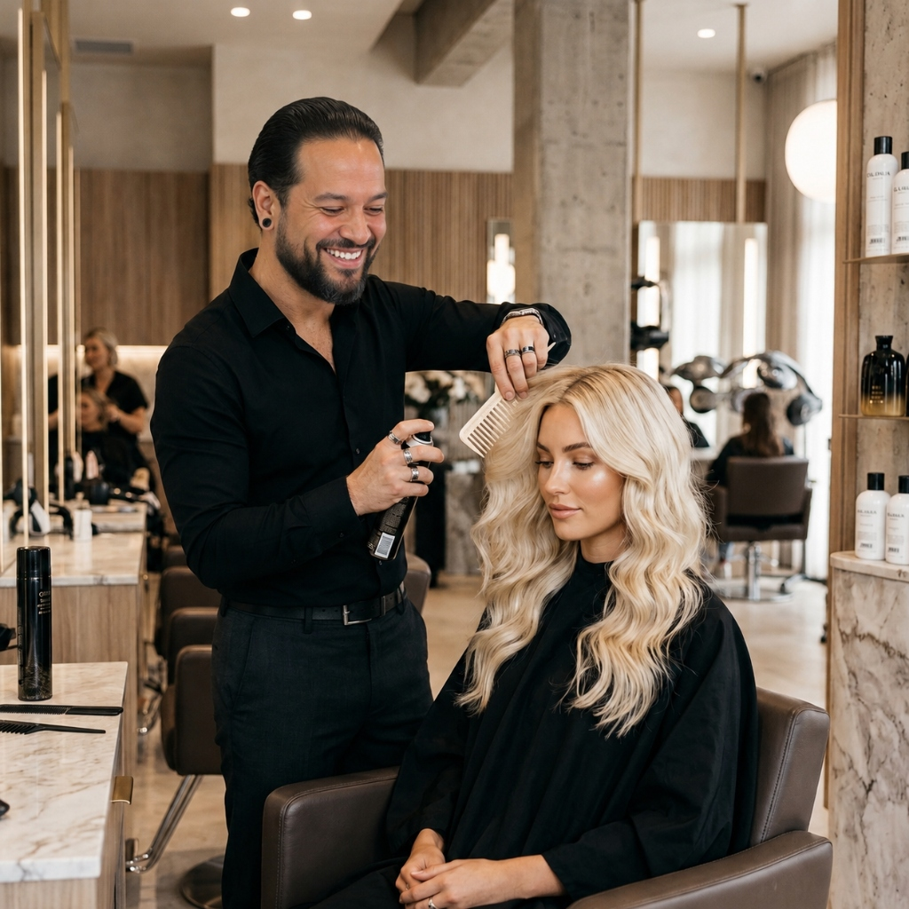
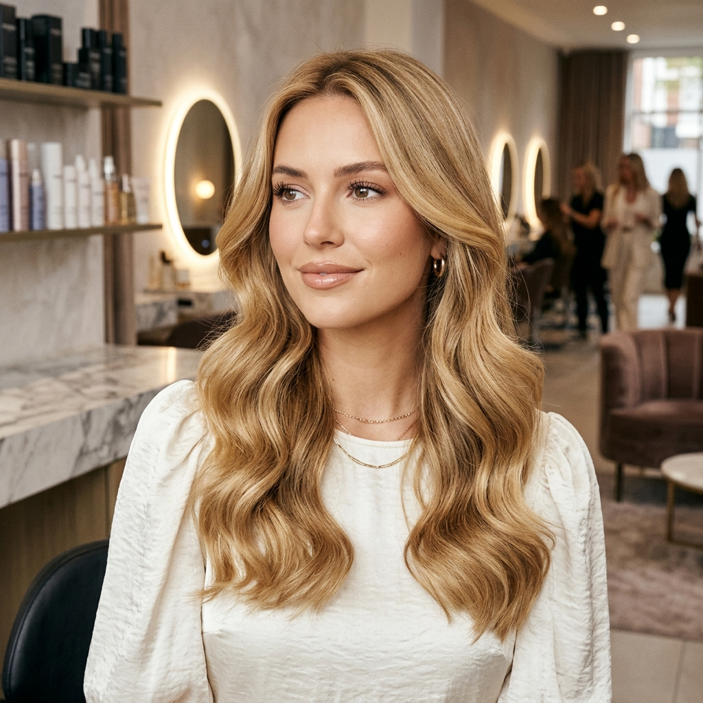
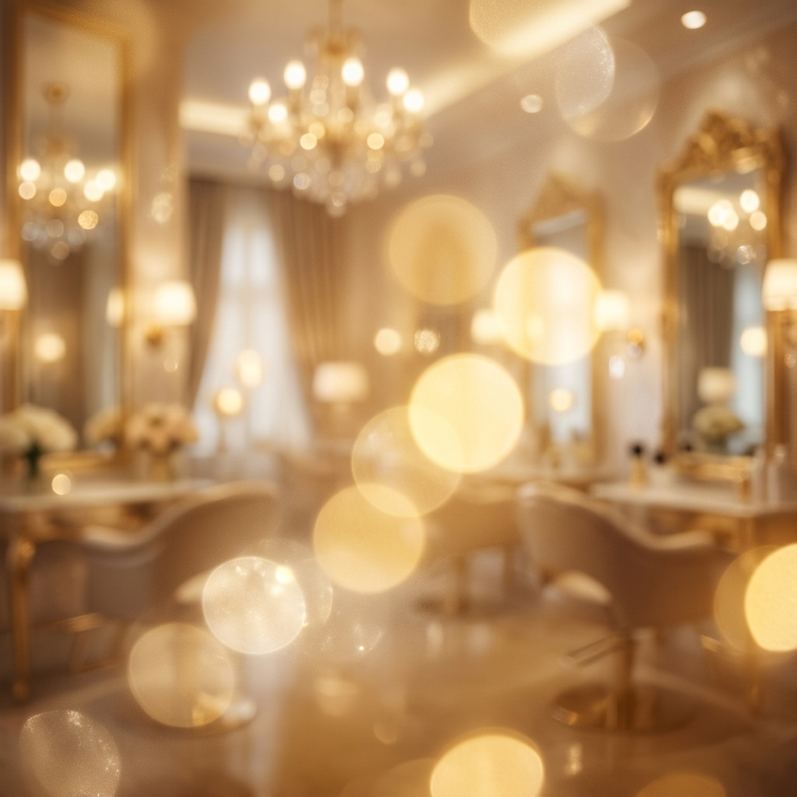

Se você sonha com um loiro bonito, saudável e com aparência de cabelo caro, mas tem medo de quebrar, ressecar ou passar novamente pelo trauma de uma descoloração mal feita, este protocolo foi criado para você.
Quero meu loiro elegante com segurançaO loiro elegante que parece de capa de revista — sem destruir o cabelo.— Ricardo Pollon
Muitos cabelos quebram não porque o loiro é impossível, mas porque o processo começa do jeito errado: sem diagnóstico, sem teste de resistência, sem análise do histórico químico e sem um plano de recuperação.
Análise da estrutura, histórico químico, couro cabeludo, teste de resistência e tom de pele. Funciona como um verdadeiro raio-x antes de qualquer química.
Escolha da técnica ideal, controle de fundo de clareamento, neutralização correta e proteção da fibra. Planejado passo a passo.
Restauração pós-química profunda com reconstrução da fibra, reposição de massa e hidratação. Tratamento de elite para o cabelo continuar forte.
Você recebe um guia home care personalizado, acompanhamento e garante uma sessão de hidratação de manutenção inclusa em até 30 dias.
Ricardo Pollon atua de forma dedicada e individual na cadeira do salão para construir a identidade visual que você deseja expressar.
Tons únicos desenhados sob medida para o seu rosto, do Platinum ao Vanilla, com preservação absoluta da saúde do fio.
Luminosidade natural e sofisticada para quem quer clarear com suavidade, mantendo a profundidade e a elegância morena.
Especialidade em neutralizar manchas, corrigir tons indesejados e devolver a saúde a cabelos sensibilizados por processos químicos anteriores.
Protocolos profundos de nutrição, reposição lipídica e reconstrução capilar focados em devolver a vida e a densidade ao fio.

O Protocolo foi desenhado para mulheres exigentes de Balneário Camboriú, Itapema, Porto Belo e região que não aceitam processos químicos em massa.
Esclareça suas principais dúvidas sobre o protocolo de clareamento saudável.
Esse medo é real e faz sentido. A quebra acontece quando o clareamento ultrapassa o limite. É por isso que o protocolo começa com diagnóstico: primeiro descobrimos o limite do seu fio, depois trabalhamos dentro dele de forma segura.
Ter química não significa automaticamente que o cabelo não pode clarear. O que determina é a resistência atual da fibra capilar. Fazemos a análise e o teste de mecha para dar a resposta exata e segura.
Loiro exige manutenção, mas o que dá trabalho é tentar consertar um loiro mal feito. Quando o processo inclui recuperação, blindagem e guia de home care, a manutenção se torna mais simples e menos corretiva.
Entendo perfeitamente o trauma que um procedimento mal feito causa. Se a experiência anterior foi feita sem diagnóstico e teste de resistência, o problema foi a metodologia. Ao mudar o método, o resultado muda.
O valor é definido após o diagnóstico capilar, pois cada cabelo tem densidade, histórico e limites diferentes. Clique em qualquer botão para iniciar o contato e agendarmos o seu diagnóstico presencial.

Agende agora o seu diagnóstico e descubra o caminho mais seguro para alcançar seu loiro elegante, saudável e com aparência de capa de revista. Hidratação profunda de manutenção inclusa pós-química.
Quero meu loiro elegante com segurança